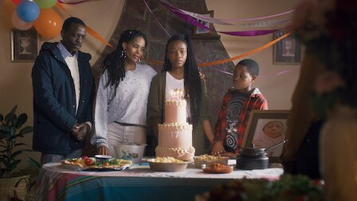
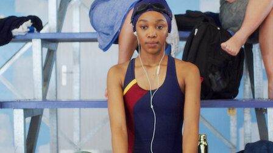
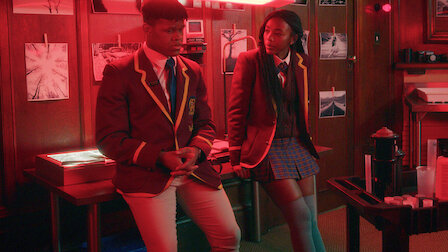
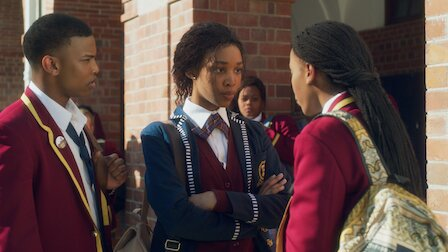

Episodes
Season 1

1. Fiksation
As another year passes since her sister's disappearance, Puleng shoulders her parents’ complex grief and escapes for a taste of joy ... with a twist.

2. The Interview
Puleng combines secrecy and strategy as she continues her quest for answers, and a special project leads to a closer bond with Fiks and her classmates.

3. Propaganda
Fiks faces backlash while campaigning for Head Girl. Meanwhile, Puleng considers a pivotal decision: Share her mission with Wade or abandon the search?

4. Payback's a B*tch
The tables turn as Puleng experiences her own school scandal. Later, she and Wade chase a new lead. Fiks struggles with the pitfalls of romance.
5. Frenemy No. 1
After Wendy goes on record, Puleng grapples with regret … and grows closer to KB. Fiks hosts a poolside gathering and deals with a devastating blow.
6. Trippin'
Tensions mount at a party with KB’s family and friends. Puleng prepares for her father’s trial and examines a series of life-changing revelations.